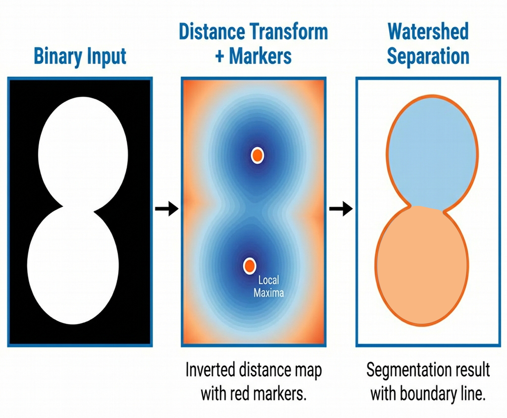
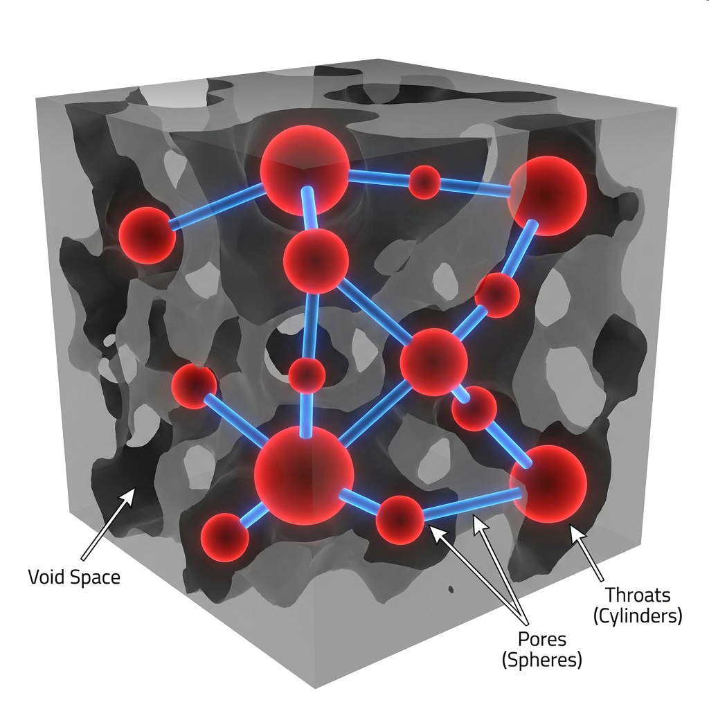

High-Fidelity Microstructural Analysis of Food Matrices via X-ray Micro-CT
4 Steps Pipeline
DICOM Loader
Synthetic Data
Multiple Forms
Quantification
Extract Pores
PNM Modeling
VTK
Multiple Formats
Splits touching pores via Distance Transform
Abstracts geometry to Nodes & Links
Goal: Monitor dynamic processes (Baking, Frying, Compression) in real-time.